Lead Pollution:
A Failed System
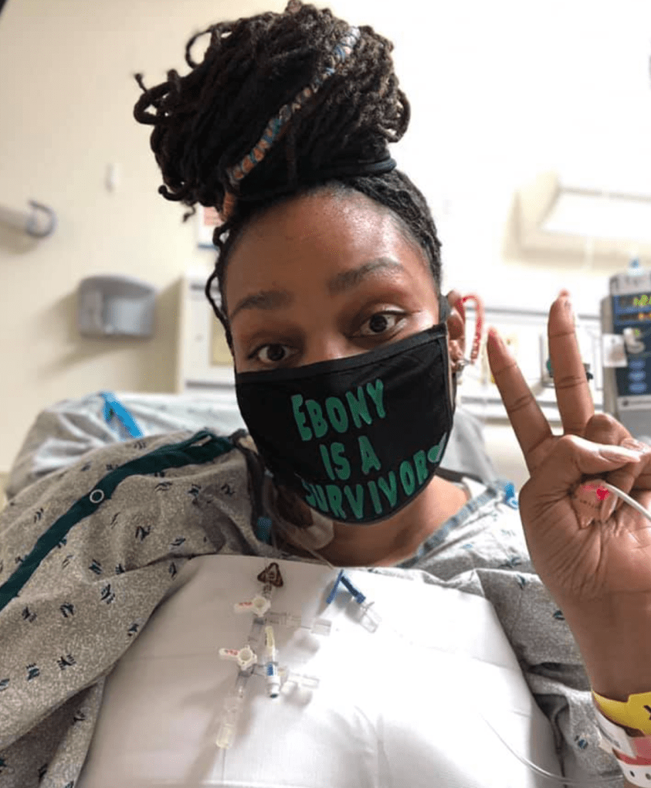
*Ebony is a survivor from lead poisoning.
It is when she successfully underwent heart
transplant surgery in 2020.
At age 2, Ebony was diagnosed with lead poisoning. Ebony’s malady — as her mother Debbie Thomas-Smith later determined — came from eating paint chips from a window sill in the apartment where her family was living on the campus of Saint Louis University.
Doctors told her mother, Debbie, and father, Zachary, she likely would suffer from cognitive impairments the rest of her life. But by midlife, Ebony had managed to earn a bachelor’s degree and dual master’s degrees in business management and
information systems. She would go on to serve for nearly 14 years with the nation’s largest operator of campus bookstores, while also raising two sons, Clayton, 5, and Khamari, 16, and parenting two beloved nieces, Mykinzi, 20, and Mareah,
23, through their adolescence. She is now helping “Kinzi” and “ReeRee” chart successful career paths of their own.
This is what Ebony Smith-Thomas murmurs each time she awakes from the surgeries that keep her heart beating.
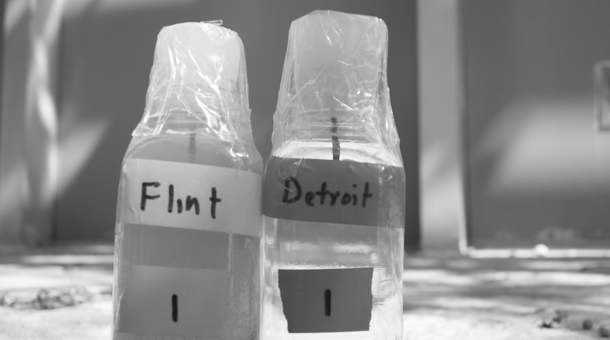
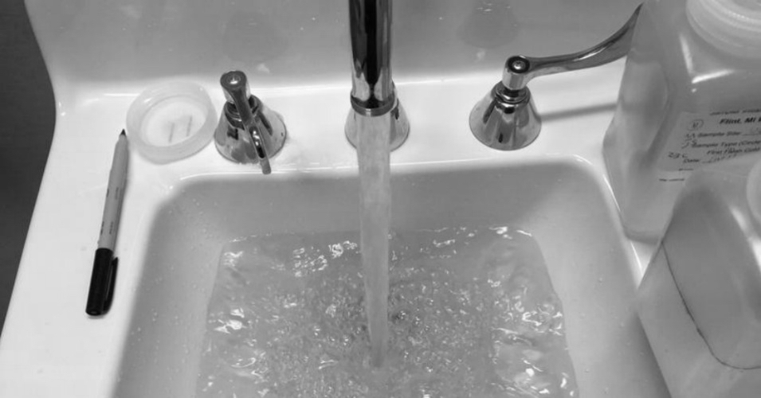
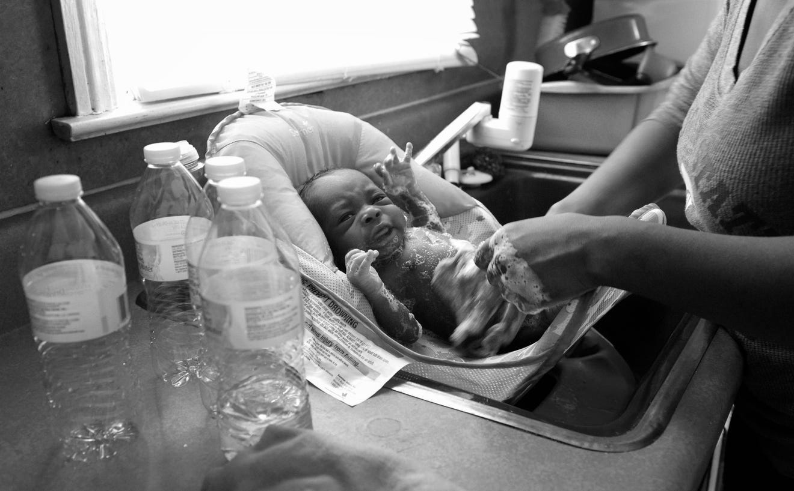
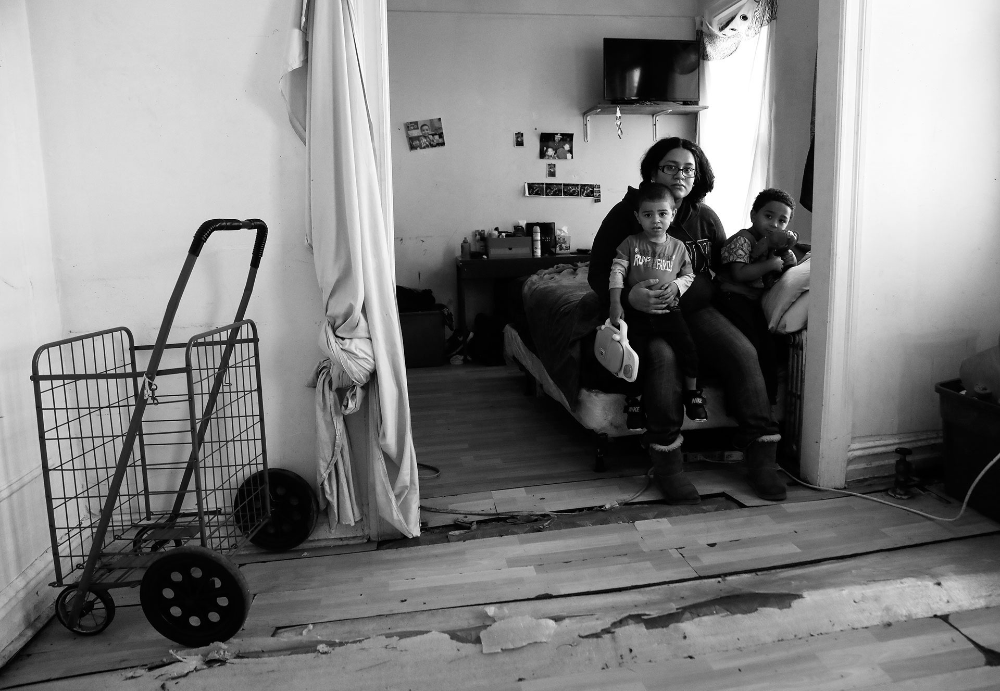

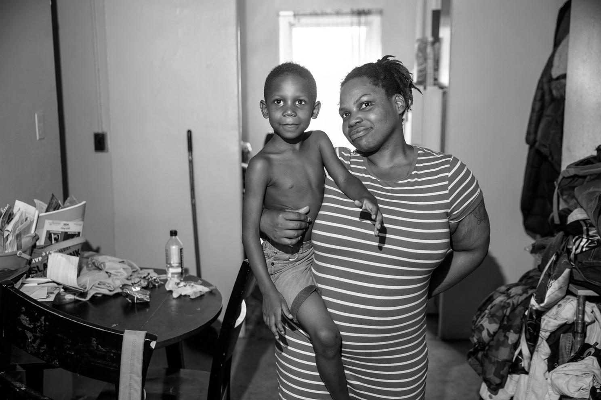

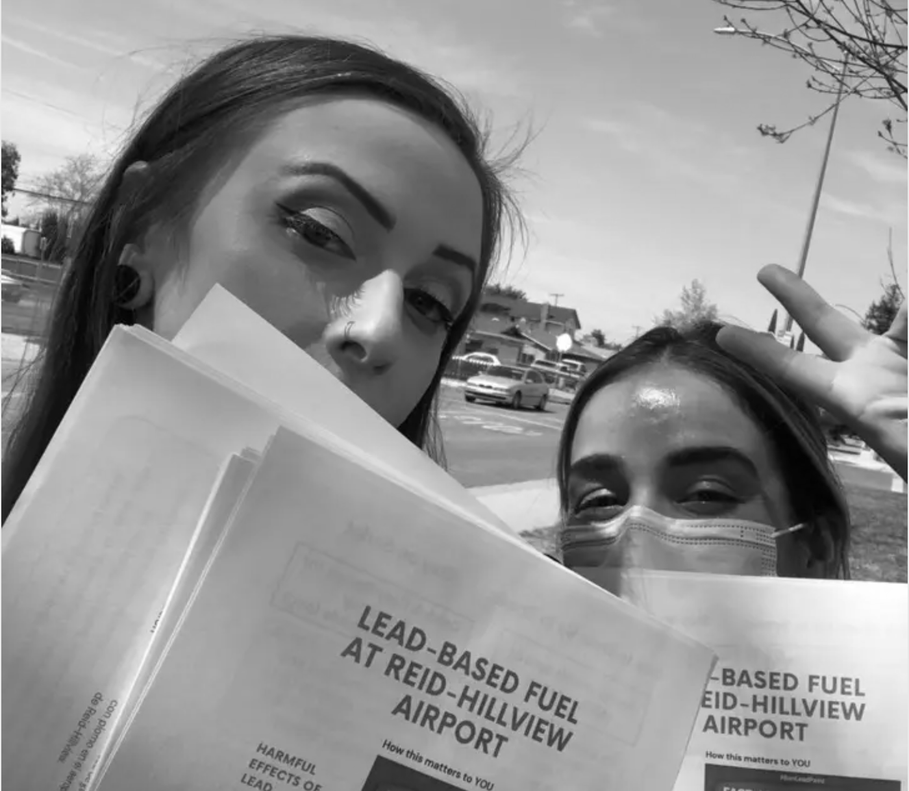
But the fact is, there are many people that are struggling against lead like her, and most of them are not so fortunate to “make it”.
Lead is
an invisible killer.
A recent study, which is published in The Lancet Public Health, has tracked more than 14,000 adults over a period of 20 years. It found that those individuals with an initial blood lead concentration at the 90th percentile had
a 37% increase in all-cause mortality and a 70% increase in cardiovascular disease mortality compared to
those with a blood lead concentration at the 10th percentile.
The researchers concluded that nearly 412,000 deaths every year in the US can be attributed to lead contamination. That figure is 10 times higher than previously reported by the Institute for Health Metrics
and Evaluation at the University of Washington in Seattle.
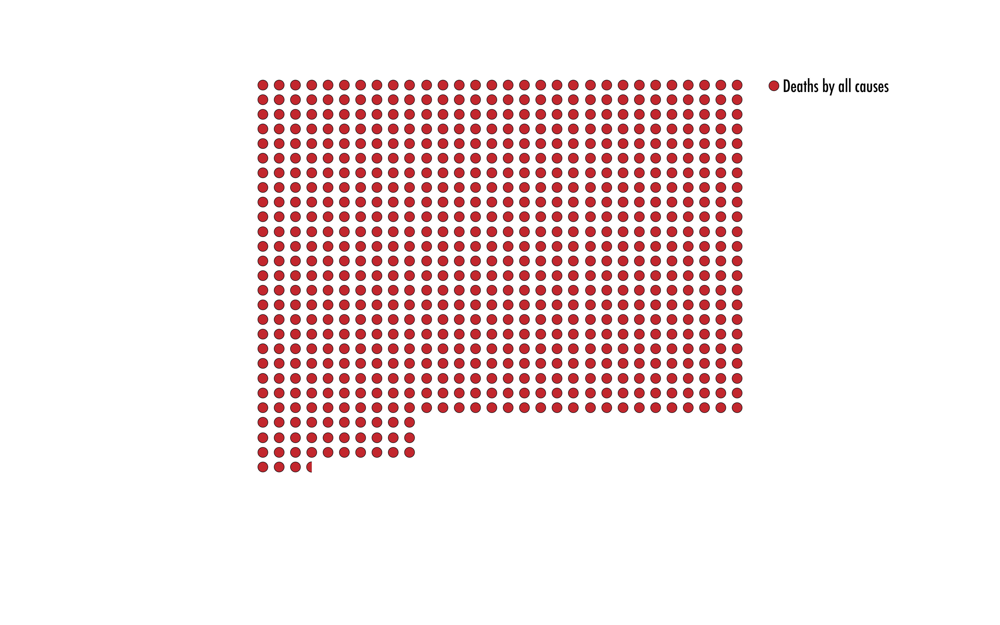
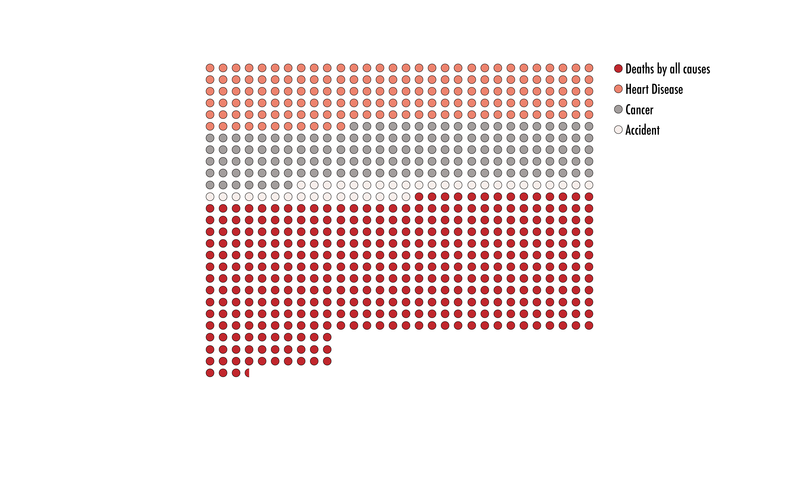
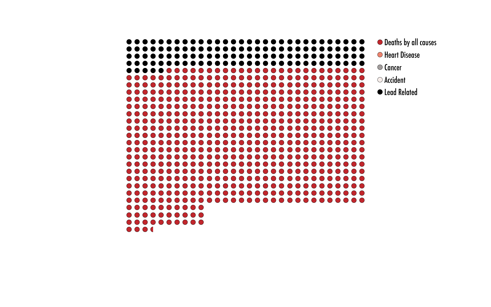
In 2018, the all-cause mortality rate in the United States, including medical, accidental and natural deaths, was 725.6 deaths per 100,000 population.
Heart disease and cancer and accident, the top three causes of death, were 161.5 and 142.6 and 49.3 deaths per 100,000, respectively.
Of all deaths, 125 can be attributed to lead pollution, almost as many as the largest cause of death. (Overlap rate is not calculated)
The continuing influence
is the scariest thing,
especially for children.
Symptoms of lead poisoning may include abdominal pain, constipation, headaches, irritability, memory problems, infertility, and tingling in the hands and feet . It causes
almost 10% of intellectual disability of otherwise unknown cause and can result in behavioral problems.Some of the effects are permanent. In severe cases, anemia, seizures, coma, or death may occur.
The possible effects of long-term lead exposure in childhood may cause damage to the brain and nervous system and have problems on future development like:
Slowed growth and development
Learning and behavior problems
Hearing and speech problems
We are still
live in danger.
However, despite the ongoing fight against lead, high blood lead rates continue to affect children. Areas of high lead exposure risk remain throughout America’s largest and richest city, an exploration of blood testing data found. In the first examination
of its kind, reporters obtained New York childhood blood testing data down to the census tract level – neighborhood areas with some 4,000 residents apiece. In densely populated New York, a tract often covers several square blocks.
While poisoning has nearly been eliminated in many neighborhoods, Reuters identified 69 New York City census tracts where at least 10 percent of small children screened over an 11-year period, from 2005 to 2015, had elevated lead levels.That is twice
the rate found across Flint, Michigan, during the peak of its notorious water contamination crisis in 2014 and 2015, where the Centers for Disease Control and Prevention found 5 percent of children’s tests were high.

Lead hides in our life
from the history.
One of the most common sources of lead poisoning is lead paint.
New York outlawed residential lead paint in 1960, 18 years before a national ban. A 2004 housing law targeted “elimination” of childhood lead poisoning within six years. The city offers free lead testing in housing, vows to fix hazards and bill landlords
when necessary, and has seen childhood exposure rates decline year after year.
Yet inspectors didn’t visit the Brooklyn apartment where Barbara Ellis lived until after her twin daughters tested high for lead three years in a row, she said. They found peeling lead paint on doors and windows. The girls required speech and occupational
therapy for their developmental delays, common among lead-exposed children.
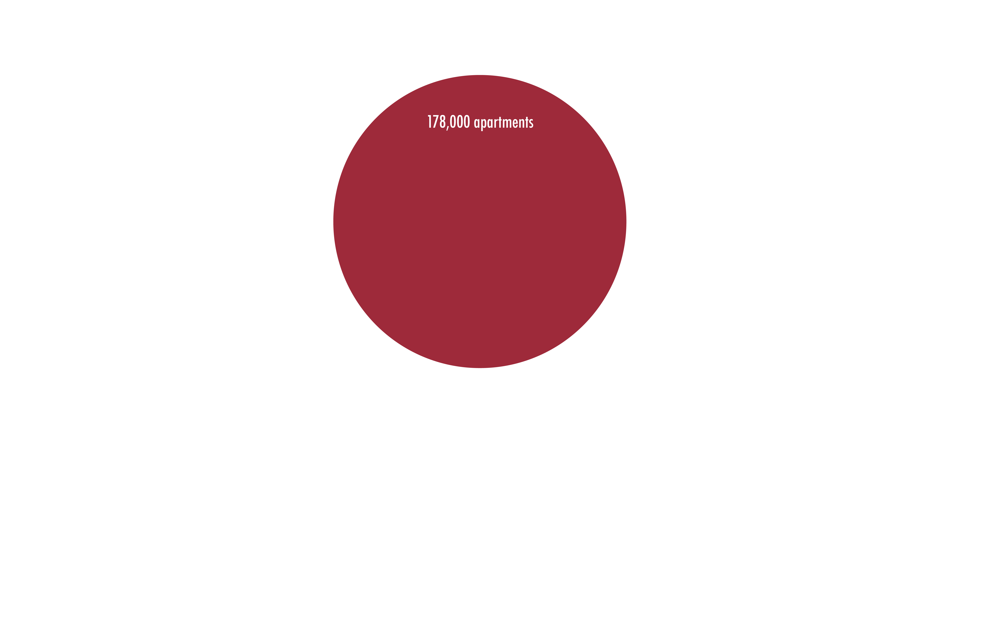
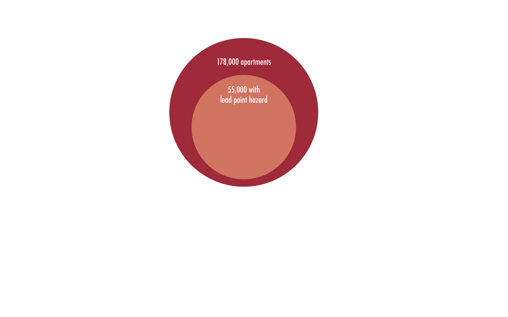
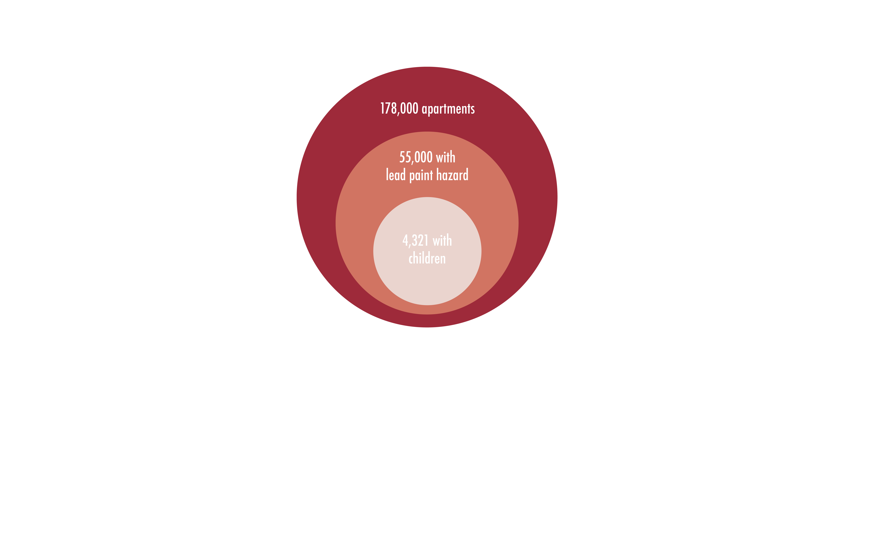
In November 2017, Mark Peters, the director of Department of Investigation Commissioner released a detailed report that revealed lead paint hazards in 55,000 of 178,000 apartments, including 4,321 homes with children under the age of six.Tests by the
NYC bureau of Investigation said that children living in 18 apartments had excessive levels of lead in their bodies, and records from housing authority show that 202 children living in 133 Housing Authority apartments between 2011 and 2016
had high levels of lead in their blood.
In addition, pollution from water sources is also a major cause, as the well-known Flint water crisis.
It's not just children in New York's public housing that are at risk of lead poisoning. Lead can enter drinking water when plumbing materials that contain lead corrode, especially where the water has high acidity or low mineral content that corrodes pipes
and fixtures. The most common sources of lead in drinking water are lead pipes, faucets, and fixtures. In homes with lead pipes that connect the home to the water main, also known as lead services lines, these pipes are typically the most significant
source of lead in the water. Experts suspect that the drinking water in New York's schools may also be tainted with lead. Lead contaminates public school drinking water through corroded lead pipes and fixtures, especially in buildings built before
1986.
[[[[[[[[[[[a chart]]]]]]]]]]]
Who is responsible
for all this?
text text text